草稿寄出前要處理三件事：明天帶去的那兩套要拍照補進 6.4。然後決定要不要拿掉 noindex。Three things to settle before sending: photograph the two setups and drop them into 6.4. Then decide whether to drop noindex.
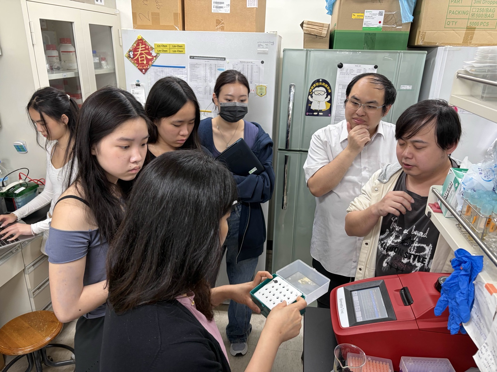
進度回報 2026 年 8 月 27 日 距 3/27 拜訪 153 天Progress update · 27 August 2026 · 153 days since 27 March
Professor Cheng, thank you for having us in your lab on 27 March. We did not even have a
settled project then, and you still gave us an afternoon, went through what growing Arabidopsis actually
takes, and shared your own hydroponic design and what you had learned from it. This page is the report back.
明天下午見面之前，這一頁想先做六件事
Six things this page is here to do before tomorrow afternoon
Bioprotectants are getting serious attention as a way to carry crops through stress, and they are
expensive to make, store and ship. Expensive enough that the people who need them cannot buy them. What we want
to try is not shipping them at all, and letting whoever needs one produce it where it is used. To show that works
we first need a plant stress model we trust.
2026-03-27，您的實驗室。您們的水耕盒舉起來給我們看，保麗龍板上鑽了洞，苗插在洞裡。
明天我們帶回去的其中一套，就是照這個做的。27 March 2026, your lab. Your hydroponic box held up for us: a foam board with holes
drilled in it, seedlings sitting in the holes. One of the two we are bringing back tomorrow is that box.
從您的實驗室開始。3 月到 8 月，我們去學界看種植的標準流程怎麼跑，上山問農夫真正在意的是什麼、
對新東西接不接受，也去產業看已經在運轉的規模有多大、他們現在卡在哪裡。學到的東西帶回自己的實驗桌，
再帶去講給國小的小朋友聽。It started in your lab. From March to August we went to other labs to see how a standard planting
protocol actually runs, up into the hills to ask growers what they really care about and whether they would take
something new, and into industry to see the scale already running and what they are still stuck on. What we
learned came back to our own bench, and then went out again to a primary-school classroom.
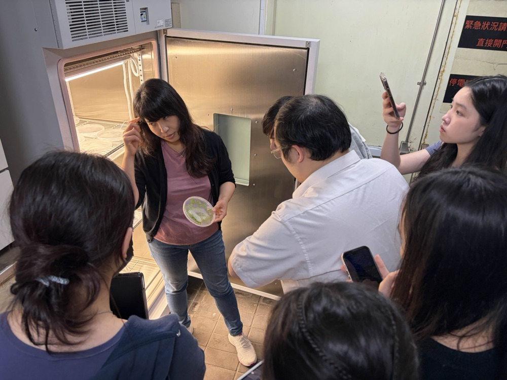
2026-03-27 您的實驗室。一盤長好的阿拉伯芥從培養箱拿出來給我們看。那天我們題目都還沒定。27 March 2026 · your lab. A tray of grown Arabidopsis out of the chamber and held up for us. We had no settled project that day.
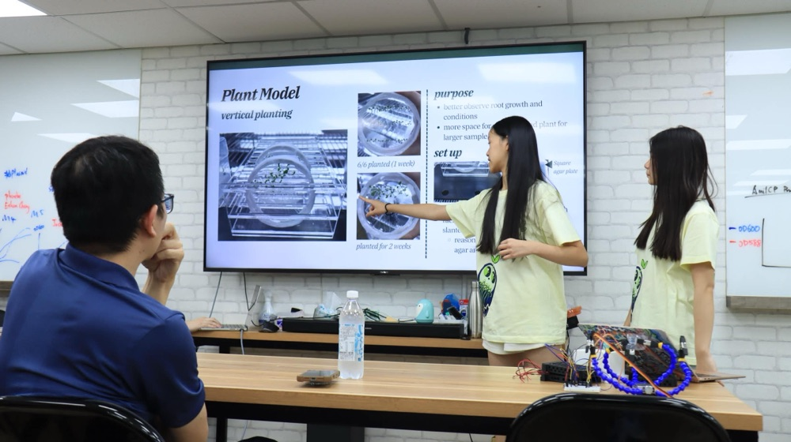
2026-06-20 跟陳文亮老師報告我們的種植流程。幕上是為什麼要改成直立盤：看得到根、一盤放得下更多株。20 June 2026 · presenting our planting protocol to Prof. Chen. On screen is why we moved to vertical plates: you can see the roots, and one plate holds more.
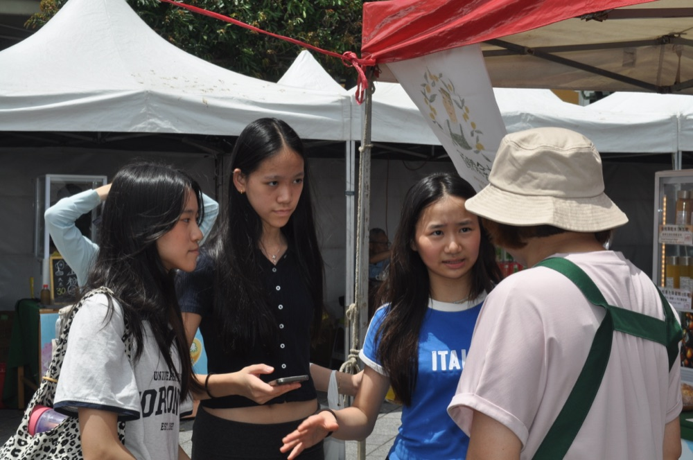
2026-05-16 花博農民市集。問一位農夫他實際怎麼判斷要不要用、什麼價錢才划算。16 May 2026 · the Hualbo farmers' market, asking a grower how he actually decides whether to use something, and at what price it is worth it.
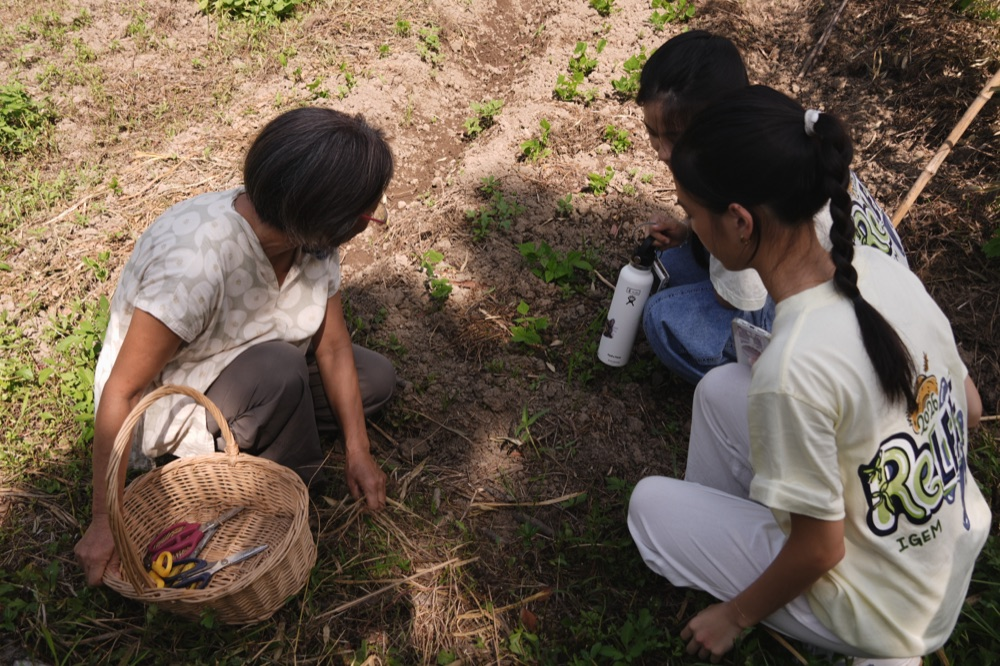
2026-07-21 陳惠雯老師的田。她蹲下來翻土給我們看，兩個學生跟著蹲下去。那天問到最多的是她什麼時候會動手、憑什麼判斷。21 July 2026 · Chen Hui-wen's field. She crouched to turn the soil over for us and two students crouched with her. Most of that afternoon was about when she acts, and what she reads to decide.2026-07-09 正瀚科技。研究員講他們的胜肽怎麼從論文走到右邊架上那些瓶子。我們第七組 agar 用的胜肽是這裡拿的。9 July 2026 · CH Biotech. A researcher walking us from the papers on the wall to the bottles on the shelf. The peptide in our seventh agar set came from here.
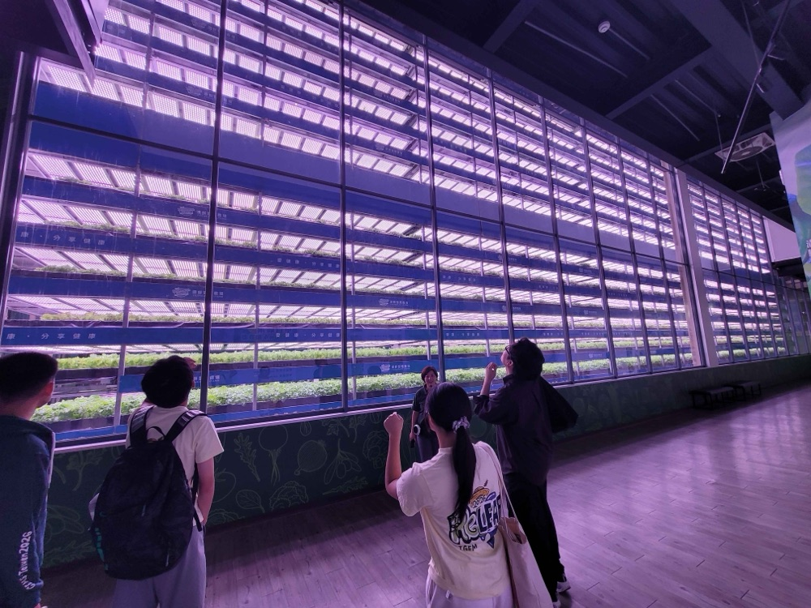
2026-08-11 源鮮智慧農場。整面十幾層的水耕牆在紫光下運轉，看已經在賣的規模長什麼樣，也問他們現在卡在哪裡。11 August 2026 · YesHealth. A hydroponic wall more than a dozen tiers high: what the working scale looks like, and what they are still stuck on.
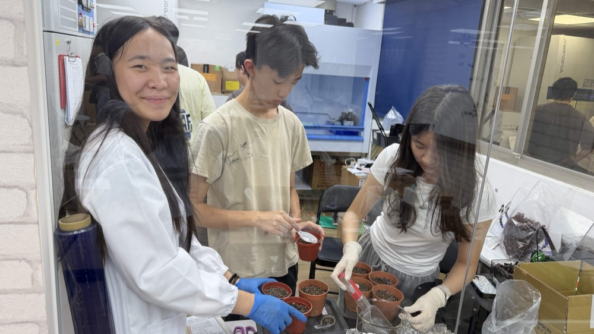
2026-07-24 回到自己的實驗室裝土。兩天後這批盆子接了從 agar 移過來的苗。24 July 2026 · back at our own bench, filling pots. Two days later these took the seedlings coming off agar.
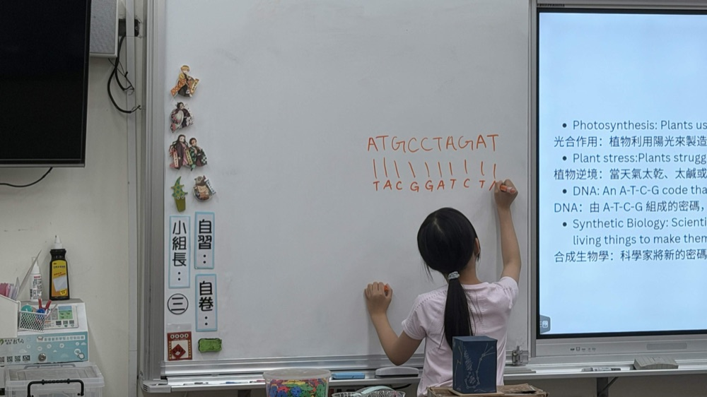
2026-07-14 國小的推廣場次。白板上的互補股是一位小朋友自己寫的，旁邊那頁投影片講的是植物逆境。14 July 2026 · a primary-school session. A pupil wrote the complementary strand herself; the slide beside her is about plant stress.
Contents
On this page
1現在做到哪裡Where we are
3/27 到今天 153 天，植物這組跑了 agar、土、水耕三條線。前四個數字是三條線走到哪，
最後一個是我們還沒做的。153 days since 27 March, with three lines running in parallel: agar, soil and hydroponics.
Four of these numbers say where a line got to. The last one is something we have not done.
那天的會議紀錄上，您給了六件具體的事。三件我們照做了，三件沒有。Our notes from that day carry six concrete things you told us. We did three of them.
您說的What you said
我們做的What we did
證據Evidence
狀態Status
先在 agar 上種苗，省空間、避開土壤變異、拿到同步的苗Germinate on agar first: it saves space, avoids soil variability and gives synchronised seedlings
八個實驗組全部從 agar 開始。第四組起改成直立方盤，讓根順著重力長，可以用 ImageJ 逐株量。這個改動是根長數據的來源。All eight sets start on agar. From set 4 we switched to vertical square plates so roots track gravity and each one can be traced in ImageJ. That change is where the root-length data comes from.
水耕對阿拉伯芥幼苗不穩定；把逆境化合物直接加進水裡，對根的作用不會如預期Hydroponics is unstable for Arabidopsis seedlings, and stress chemicals added straight to the water do not reach roots the way you expect
我們自己的數字同意您。前三個原型直接把種子下在培養液裡，發芽率 40 %、30 %、10 %，三個都污染。第四個改成把 agar 上長好的苗移進去，5 株全活。現在的盤是延續第四個的做法。Our own numbers agree with you. The first three prototypes sowed seed straight into the medium and germinated 40 %, 30 % and 10 %, all three contaminated. The fourth moved agar-grown seedlings in instead and all five lived. The current plate follows the fourth.
用表型和生化的輸出，不要只看基因表現Read phenotype and biochemistry, not only gene expression
三個讀值：ImageJ 量的主根長、鮮重、80 % 丙酮萃取的葉綠素 (645／663 nm)。基因表現一次都沒做。Three readouts: primary root length in ImageJ, fresh weight, and total chlorophyll extracted in 80 % acetone at 645 and 663 nm. No gene expression at all.
移植本身就是逆境，濕度掉、操作、乾燥都算，建議保濕The transfer is itself a stress: the humidity drop, the handling, the drying. Hold the humidity
有保濕，也做了 3 天苗和 7 天苗同一天移植的年齡比較。可惜的是我們沒有把保濕的做法寫進每天的紀錄，回頭看說不出哪幾天蓋著、蓋多久。下一批會寫下來。We did hold the humidity, and we ran the age comparison, three-day against seven-day seedlings moved the same day. What we did not do was write the covering into the daily record, so looking back we cannot say which days were covered or for how long. We will write it down for the next batch.
逆境等營養生長大約 14 天之後再施加，不要一移植完就上Apply stress after about fourteen days of vegetative growth, not straight after the transfer
我們 8/23 開始做 ACCD 處理，那是移植後第 28 天，照片裡植株已經抽苔開花、有些角果在拉長。Kyle 老師當天在紀錄上寫了「一般不會拿已經開花的植株做實驗」。這一組資料的解釋空間被我們自己弄掉了。We started the ACCD treatment on 23 August, day 28 after transfer. The photographs from that day show plants already bolted and flowering, some with siliques elongating. Kyle wrote it into the log the same day: you do not normally run experiments on plants that have already flowered. We took away our own ability to interpret that set.
用 33–35 °C 的熱休克當 proof-of-concept，溫和一點，不要把植物殺掉Use a 33 to 35 °C heat shock as the proof of concept, moderate enough not to kill them
做了熱逆境，但用的是 37 °C，比您說的高。四組（對照、前處理、同時、後處理）跑完，三個處理組的每公克鮮重葉綠素都掉到對照的一半左右，而它們的鮮重反而比對照高或持平。這個方向我們解釋不了。We ran heat, at 37 °C, above what you suggested. Across four groups (control, pre-, co- and post-treatment) all three treated groups came out at roughly half the control’s chlorophyll per gram fresh weight, while their fresh weights were equal or higher. We cannot explain that direction.
用 ROS 染色 (NBT／DAB) 做視覺化的逆境指標Use ROS staining, NBT or DAB, for a visible stress readout
沒做。從 3 月到現在一次都沒染過。Not done. We have not run a single stain since March.
無none
沒做Not done
您那天還提了一件我們後來沒有對象可以做的事：用根分泌的 naringenin 或水楊酸當菌的啟動訊號。
原因寫在下一節。One more thing you raised that no longer has anything to attach to: using naringenin or salicylic
acid from root exudate as the trigger for the bacteria. Why is in the next section.
3設計改了哪些What we changed in the design
3/27 給您看的線路，和現在的不是同一個。這決定了您那天講的哪些還算數。The circuit we put in front of you on 27 March is not the circuit we have now. That decides which parts of
that afternoon still apply.
當時Then2026-03-27 給您看的What you saw on 27 March
現在Now2026-08-2727 August 2026
感測Sensing菌自己感測逆境：SigB-ctsR、riboswitch，加上 NahR 偵測根分泌的 naringenin 或水楊酸。The cell senses stress itself: SigB-ctsR, riboswitches, plus NahR reading naringenin or salicylic acid from root exudate.
感測Sensing感測移到菌外面。土壤感測器加天氣預報決定要不要生產，菌不再自己判斷。Sensing moved off the cell. A soil sensor and a weather forecast decide whether to produce; the cell no longer judges anything.
控制Control逆境訊號直接驅動基因線路。The stress signal drives the circuit directly.
控制Control光控。CcaS／CcaR 接 PcpcG2-veg，520 nm 開、660 nm 關。光路四個部件都已經拿到定序確認的陽性 clone。Light. CcaS/CcaR into PcpcG2-veg, 520 nm on and 660 nm off. All four parts of the light path have sequence-verified positive clones.
輸出Outputtrehalose 或 ACC deaminase。Trehalose or ACC deaminase.
輸出OutputACC deaminase 留下來，光控與組成型兩個版本都有陽性 clone。加上 BoPep4，花椰菜的 elicitor peptide。trehalose 被我們自己的數據刪掉了。ACC deaminase stayed, with positive clones for both the light-gated and the constitutive version. BoPep4 joined it, an elicitor peptide from broccoli. Trehalose was removed by our own data.
trehalose 是唯一一個被 agar 實驗直接砍掉的設計。第一組預試就看到
½ MS 對照組平均 51.7 mm，加了 1 mM trehalose 掉到 14.6 mm。我們把濃度降到 0.5 mM，第二組還是有抑制；
再降到 0.125 到 0.5 mM 做第三組。到第五、六組改測 1、5、10 mM 配鹽的時候，它在鹽逆境下的效果只出現在葉綠素上，
根長沒有反應（圖 2）。最後它沒有進到線路裡。
Trehalose is the one design element the agar work deleted outright.
The first pre-test already showed it: ½ MS control averaged 51.7 mm, and 1 mM trehalose brought that down to 14.6 mm.
We dropped to 0.5 mM and set 2 still showed inhibition, then ran 0.125 to 0.5 mM as set 3. By sets 5 and 6, testing
1, 5 and 10 mM against salt, whatever it did under stress showed up in chlorophyll and not in root length
(Figure 2). It never made it into the circuit.
所以您 3/27 關於根分泌物訊號的那一段，現在沒有對應的東西了。agar 先種苗、移植本身是逆境、
逆境施加的時機、熱逆境的溫度、ROS 染色，這幾件我們每天都還在用。So the part of that afternoon about root-exudate signalling no longer has a target. Agar first,
the transfer as a stress in its own right, when to apply the treatment, what temperature to use, and ROS staining,
those we are still working with every day.
4Agar：八個實驗組Agar: eight experiment sets
5/10 到今天。前三組水平盤只拿得到發芽數，第四組換直立盤之後才有根長。
第七、八組要 40 株的規模，又換回圓形水平盤。10 May to today. The first three sets, on horizontal plates, could only give germination counts.
Root length starts at set 4, on vertical plates. Sets 7 and 8 went back to round horizontal plates because they
need forty seedlings a plate.
#1–#35/10 – 6/11 水平盤10 May – 11 Jun · horizontal
找 trehalose 的上限Finding the trehalose ceiling
50、100、150 mM NaCl 配 1 → 0.5 → 0.125 mM trehalose50, 100, 150 mM NaCl against 1 then 0.5 then 0.125 mM trehalose
1 mM 有毒：51.7 → 14.6 mm1 mM is toxic: 51.7 to 14.6 mm
只有發芽數，量不到根長Germination counts only, no root length
#46/18 – 6/30 直立盤18 – 30 Jun · vertical
改成直立，開始量根長Vertical plates, root length begins
100 mM NaCl × 0.25／0.5／1.0 mM trehalose，n = 9100 mM NaCl by 0.25 / 0.5 / 1.0 mM trehalose, n = 9
8 組 × 9 株 × 連續 4 天Eight groups, nine seedlings, four consecutive days
6/30 對照盤污染，資料棄掉The 30 June control plate was contaminated and dropped
#57/07 – 7/27 兩次7 – 27 Jul · twice
拉到 250 mM，重做一次Out to 250 mM, then repeated
0／150／250 mM × 0／1／5／10 mM trehalose0 / 150 / 250 mM by 0 / 1 / 5 / 10 mM trehalose
250 mM 是致死線，8 株全部 0.000 mm250 mM is lethal: all eight seedlings at 0.000 mm
第一次的對照盤長黴，整組重做Mould on the first control plate; the whole trial was rerun
#67/29 – 8/05 直立盤29 Jul – 5 Aug · vertical
最乾淨的一組The cleanest set
0／75／100／150 mM NaCl × 0／5 mM trehalose，n = 90 / 75 / 100 / 150 mM NaCl by 0 / 5 mM trehalose, n = 9
74.95 → 34.77 → 11.00 → 1.75 mm74.95 to 34.77 to 11.00 to 1.75 mm
#78/01 – 8/24 三次1 – 24 Aug · three trials
正瀚的胜肽，前／同／後處理The CH Biotech peptide, pre / co / post
圓形水平盤，40 株／盤，1 mL 稀釋 1/500Round horizontal plates, forty seedlings each, 1 mL at 1 in 500
第三次是這條線最乾淨的資料The third trial is the cleanest data on this line
第一次整盤污染，第二次只撐到第 4 天Trial 1 contaminated throughout; trial 2 stopped on day 4
#88/22 起 進行中From 22 Aug · running
ACCD，還沒有數字ACCD, no numbers yet
ACCD × 0／75／100 mM NaCl，兩個 trialACCD by 0 / 75 / 100 mM NaCl, two trials
8/26 開始處理，目前只有照片Treatment from 26 August; photographs only so far
這一組的 protocol 是明天想請教您的This is the protocol we want to ask you about
HS8/15 – 8/21 另一條15 – 21 Aug · separate
熱逆境，37 °CHeat, 37 °C
四組，胜肽用噴的不是拌進 agarFour groups; the peptide is sprayed, not mixed into the agar
結果方向和預期相反The result came out the wrong way round
← 可以左右捲。深綠是有量到根長的組，灰色是另一條線。Scrollable. Dark green sets produced root-length data; grey is a separate line.
4.1 我們的 agar 怎麼配4.1 How we make the plates
½ MS50 mL／盤，1 % sucrose，MES，1 % agar50 mL per plate, 1 % sucrose, MES, 1 % agar
3 % → 1 %蔗糖降下來，因為 3 % 造成脫水Sucrose reduced; 3 % was dehydrating the plates
4 天春化，之後進培養箱Stratification, then into the incubator
4 天苗轉到處理盤的苗齡Seedling age at transfer to the treatment plate
Day 6標準量測日（第五、六組）The standard measurement day in sets 5 and 6
?滅菌方法、生態型、光週期、光強度，我們沒有寫進每天的紀錄Sterilisation, ecotype, photoperiod, light intensity: we never wrote these into the daily record
最後那一格的條件寫在另一份操作文件，我們每天的紀錄沒有抄過來，所以這頁上寫不出來。
The conditions in that last box live in a separate procedure document, and the records the students
keep every day never copied them across, so we cannot put them on this page.
4.2 鹽的劑量反應4.2 The salt dose response
圖 1.Figure 1.第六組，移植後第 6 天（2026-08-03）的主根長。誤差棒是 1 SD，由每株的 ImageJ 原始值算出。
150 mM NaCl 單獨那組只有 7 株，100 mM 加 5 mM trehalose 那組是 10 株，其餘 9 株。
原始檔：Experiment Set 6 Root Length.docx。Set 6, day 6 after transfer, 3 August 2026. Bars are means, error bars 1 SD recomputed from the
per-seedling ImageJ values. 150 mM NaCl alone has n = 7 and 100 mM with 5 mM trehalose has n = 10; the rest are
n = 9. Source: Experiment Set 6 Root Length.docx.
0 到 150 mM 之間根長掉了 43 倍，單獨加鹽那四組的 SD 都在 4.5 mm 以內。
75 mM 那一格是我們現在用來做逆境的濃度，它把根長壓到對照的 46 %，植株還活著、還量得動。
A 43-fold suppression from 0 to 150 mM, and the four NaCl-alone groups all sit under 4.5 mm SD.
The 75 mM column is what we now use for stress: it takes root length to 46 % of control and the plants are still
alive and still measurable.
4.3 根長沒反應，葉綠素有4.3 No response in root length, a response in chlorophyll
圖 2.Figure 2.第五組第二次，2026-07-27，同一批盤同一天。左：主根長，n = 8，加 trehalose 看不出趨勢。
右：總葉綠素對對照組的比值，隨 trehalose 濃度單調上升。原始檔：Experiment Set 5 Trial 2 Root Length.docx 與
Chlorophyll content for Agar plate.xlsx。Set 5 trial 2, 27 July 2026, same plates and same day. Left: primary root length, n = 8, with no
trend across trehalose. Right: total chlorophyll as a ratio to control, rising monotonically with trehalose dose.
Sources: Experiment Set 5 Trial 2 Root Length.docx and
Chlorophyll content for Agar plate.xlsx.
Kyle wrote a guess into the set 4 record: under salt, trehalose is probably not acting by restoring
root growth, and the published salt-tolerance work reads out on shoots, so we should be measuring shoot fresh weight
and rosette area. Set 5 trial 2 is consistent with that guess. We do not have rosette area yet.
Two problems we caught in our own chlorophyll workbook. In sets 4 and 6 the two wavelength
columns look transposed: the 645 nm readings sit above the 663 nm ones, the reverse of the other three sheets.
And in set 6, normalised per gram fresh weight, the salt-stressed groups appear to have more chlorophyll,
because fresh weight fell tenfold (control 0.1756 g against 0.0175 g at 150 mM), not because there is more
chlorophyll. Both normalisations of set 6 are on this page.
16 to 21 August, vertical plates into a 37 °C chamber, four groups: control, pre-, co- and
post-treatment, peptide sprayed on. Control came out at 0.6263 mg/g, pre-treatment 0.3482, co-treatment 0.3366,
post-treatment 0.3353. All three treated groups sit near half the control, while their fresh weights were 0.1536,
0.1369 and 0.1307 g against the control’s 0.1219 g, slightly heavier rather than lighter.
我們自己看得到的三個問題Three problems we can see ourselves
一，溫度是 37 °C，不是您建議的 33–35 °C。二，加熱幾個小時、有沒有慢慢升溫、前處理是哪一天噴的，
我們當時沒有寫下來。三，這張表的 OD 欄位和第四、六組是同一個可能對調的問題。所以這組我們不敢說它代表什麼，
只能說量出來是這樣。這是明天最想請教您的一題。
One: 37 °C, not the 33 to 35 °C you suggested. Two: how many hours of heat, whether there was a ramp,
and which day the pre-treatment was sprayed are all missing from the deck. Three: this sheet has the same possible
wavelength transposition as sets 4 and 6. So we are not claiming this set means anything, only that this is what
came out. It is the thing we most want to ask you about tomorrow.
5從 agar 到土From agar into soil
7/26 移植，7 盤 28 盆，到 8/25 為止每天拍照、每天寫紀錄。Transferred on 26 July, seven trays and 28 pots, photographed and logged daily to 25 August.
5.1 3 天苗對上 7 天苗5.1 Three-day against seven-day seedlings
Tray 1 took three-day-old seedlings, trays 2, 3 and 4 took seven-day-old ones, all moved from agar on
the same day, 26 July. The same pots were then photographed from the same angle every day to 25 August. You said the transfer is a stress in
itself; this is the only set we have that speaks to it.
圖 3.Figure 3.2026-08-15，第 1 盤（3 天苗）。移植後第 20 天，四盆各一株蓮座，還沒抽苔。15 August 2026, tray 1, the three-day seedlings. Day 20 after transfer, one rosette per pot,
not yet bolted.圖 4.Figure 4.2026-08-18，同一盤，移植後第 23 天，已經開花。抽苔發生在這兩張之間。18 August 2026, the same tray at day 23, in flower. Bolting happened between these two
photographs.
The bolting window sits between day 20 and day 23 after transfer. That number comes from reading the
photographs backwards, not from a measurement, because our log has no column for bolting date.
On 23 August we started the ACCD treatment on trays 3 and 4, split into pre-, co- and post-treatment
with a 150 mM NaCl control and a plain control. In the photographs from that day almost every plant across the five
groups has bolted and flowered, and several have siliques already elongating. Kyle’s feedback that day: you do
not normally run an experiment on plants that have already flowered, because vegetative growth is essentially over.
圖 5.Figure 5.2026-08-23，ACCD 前處理組開始處理的當天。花莖已經高過盆緣。
您 3/27 說的「營養生長約 14 天之後再施加」，我們是在第 28 天上的。23 August 2026, the day the ACCD pre-treatment started. The inflorescence is already above the
rim. You said to apply stress after about fourteen days of vegetative growth; we applied it on day 28.
5.3 這一個月改了什麼5.3 What changed over the month
8/04
表面噴水改成底盤吸水Top spraying to bottom watering
8/2 到 8/4 是從土表噴。被指出之後改成把水加在底盤讓它自己吸，8/6 起的紀錄都是「added water at the bottom plate」。We sprayed the surface from 2 to 4 August. After that was flagged we moved to filling the tray and letting the pots draw it up; from 6 August the log reads “added water at the bottom plate”.
8/05–8/07
拔掉定位用的槍頭Pipette-tip markers removed
每株移植的苗旁邊插一個槍頭做位置標記。植株長大之後槍頭離太近會擋到，所以拔掉。Each transplanted seedling had a pipette tip pushed in beside it as a position marker. Once the plants were big enough the tips were in the way, so they came out.
8/13–8/23
直播盤加保濕蓋，滿兩週後拿掉Covers on the direct-sown trays, off at two weeks
第 5、6 盤是 8/10 直接下種的。8/13 被指出太乾，加蓋；8/23 滿兩週、土夠濕，開蓋。移植的那幾盤也有保濕，只是紀錄上沒寫是哪幾天。Trays 5 and 6 were sown directly on 10 August. On 13 August they were flagged as too dry and covered; on 23 August, two weeks old and the soil holding moisture, the covers came off. The transplanted trays were kept humid too; the record just does not say on which days.
8/18–8/22
花序支撐換了三次Three goes at staking
8/18 插竹籤，8/19 用棉線綁，當天就看到原本垂下來的植株站直。竹籤被指出太短（花莖會超過 20 cm），8/22 換成粗筷子加蓮花夾。Bamboo stakes on 18 August, tied with cotton thread on 19 August, and the plants that had been leaning stood up the same day. The stakes were then flagged as too short, since the stems go past 20 cm, so on 22 August they became thicker chopsticks with lotus clips.
8/07–8/21
黴菌，一直沒斷Mould, continuously
第 4 盤 8/7 開始長黴，8/8 換土，8/10 和 8/12 各移掉一盆。8/15 有一盆連葉子上都長。8/21 第 3 盤表面出現白色菌絲。到 8/25 為止沒有停過。Tray 4 started on 7 August, its soil was changed on the 8th, and a pot was removed on both the 10th and the 12th. On 15 August one pot had mould on a leaf as well as the soil. On 21 August white mycelium appeared on tray 3. It had not stopped by 25 August.
圖 6.Figure 6.2026-08-19，用棉線把花序綁上竹籤。這是我們目前為了收種子做過的全部準備。19 August 2026, inflorescences tied to bamboo with cotton thread. This is the whole of our
preparation for seed collection so far.
土耕這邊我們還沒量到的What we have not measured on the soil side
Survival after transfer was never counted. The 22 °C and 40 to 45 % humidity are targets written on a
slide, not logged readings. Photoperiod and light intensity are not recorded. No rosette diameter, leaf count,
fresh weight, bolting date or silique count exists. The whole line is photographs and prose. On 25 August Kyle
noted the photographs do not show the leaves clearly enough to compare treatments, and we agree.
6水耕盤The hydroponic plate
3/27 您說水耕對阿拉伯芥幼苗不穩定。我們後來還是做了六個原型，而前三個的數字證明您是對的。On 27 March you told us hydroponics is unstable for Arabidopsis seedlings. We went and
built six prototypes anyway, and the first three proved you right.
圖 7.Figure 7.五個原型的發芽率。P1 到 P3 和 P5 是把種子直接下在培養液裡，P4 是把 agar 上長好的苗移進去。
每個原型都跑 6 到 11 天。原始檔：Initial ideas/Hydroponic design.pptx 第 4 到 8 頁。Germination across five prototypes. P1 to P3 and P5 sow seed into the medium; P4 moves in
seedlings grown on agar. Each ran six to eleven days. Source:
Initial ideas/Hydroponic design.pptx, slides 4 to 8.
容器越做越小、水越用越少，發芽率從 40 % 掉到 10 %，三個都污染。第四個換的不是容器，是方法：
不在水裡發芽了，改成把 agar 上長好的苗移進去，5 株全活，那一版的問題欄位我們寫「still not found」。現在的盤走這條路。
所以嚴格講，我們這個不是純水耕，是把 agar 放進水裡。
Shrinking the vessel and the volume took germination from 40 % to 10 %, all three contaminated. For the
fourth we changed the method rather than the vessel: stop germinating in water, move in seedlings grown on agar
instead. All five lived, and the problems field for that version reads “still not found”. The current
plate follows that line. Strictly, what we have now is not hydroponics. It is agar, placed in water.
6.1 五個原型，一個一個看6.1 The five prototypes
下面五張是設計文件裡每一版的實照和當時填的欄位。前三版把盒子越做越小、培養液越用越少，
發芽率一路掉，三版都寫污染。第四版換的是方法而不是盒子，問題欄位當時填的是「still not found」。
第五版把濾紙換成保麗龍浮板，發芽率回到 7/10，污染又回來了。
Below is each version as it appears in the design document, with the fields that were filled in at
the time. The first three shrank the box and the volume, germination fell all the way down, and all three say
contamination. The fourth changed the method rather than the box, and its problems field says
“still not found”. The fifth swapped the filter paper for a foam raft, germination came back to 7 of 10,
and so did the contamination.
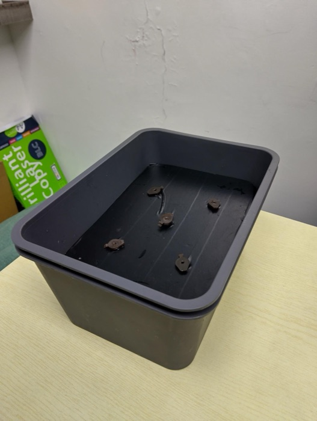
P1
外徑Box
21.2 × 14.1 × 11.4 cm
培養液Medium
300–500 mL
天數Ran for
11 天11 days
發芽Germinated
4 / 10
問題Problems
污染contamination
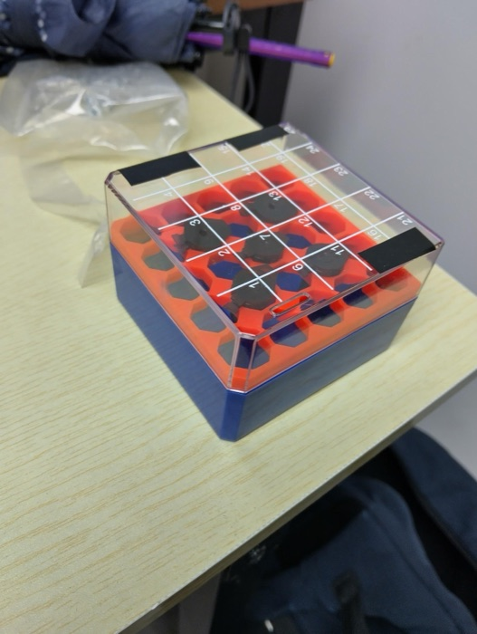
P2
外徑Box
7.5 × 7.5 × 5.3 cm
培養液Medium
85 mL
天數Ran for
11 天11 days
發芽Germinated
3 / 10
問題Problems
培養液滲漏、污染medium leakage, contamination
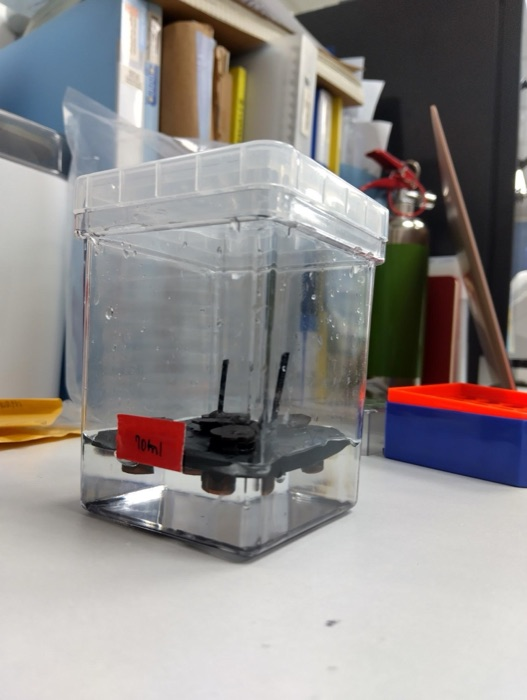
P3
外徑Box
6.5 × 6.5 × 10 cm
培養液Medium
70 mL
天數Ran for
11 天11 days
發芽Germinated
1 / 10
問題Problems
污染contamination
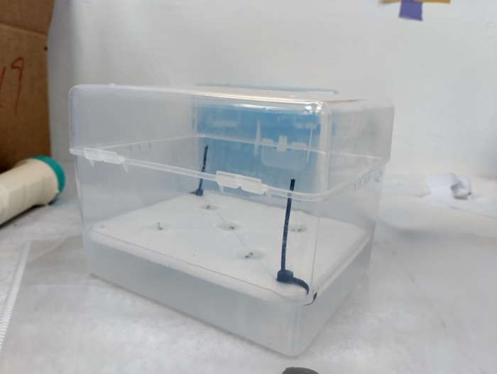
P4
外徑Box
12.8 × 10.1 × 9.5 cm
培養液Medium
250 mL
天數Ran for
6 天6 days
發芽Germinated
5 / 5
問題Problems
still not foundstill not found
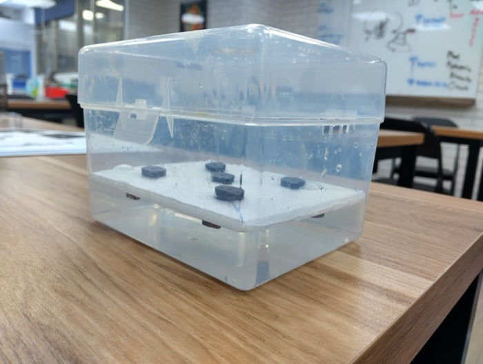
P5
外徑Box
12.8 × 10.1 × 9.5 cm
培養液Medium
250 mL
天數Ran for
6 天6 days
發芽Germinated
7 / 10
問題Problems
污染contamination
P4 是唯一一版沒有寫污染的，也是唯一一版不在水裡發芽的。這是我們現在最想跟您討論的線索，
整理在第 7 節。P4 is the only version with no contamination logged, and the only one that did not germinate in
water. That is the thread we most want to talk through with you, and it is laid out in
section 7.
6.2 現在這一版6.2 The current version
圖 8.Figure 8.2026-08-04，鹽逆境結束當天的後處理組。13 個孔位排成 4/5/4，用了 10 個。
兩側灰色的是把盤撐住的夾子。4 August 2026, the post-treatment box on the last day of the salinity run. Thirteen positions
in a 4 / 5 / 4 stagger, ten of them used. The grey pieces on each side are the clips holding the plate level.圖 9.Figure 9.2026-08-20，白色的同一個設計，用了 9 個孔位。蓋子中央那圈半透明的是 agar。
每個蓋有一個拉柄，可以單獨把一株拿出來，不動到其他株。20 August 2026, the same design in white, nine positions used. The translucent ring inside each
cap is agar. Every cap has a pull tab, so one plant can be lifted out without disturbing the others.
13孔位，排成 4／5／4 的錯位Positions, staggered 4 / 5 / 4
½ MSpH 5.7–5.8，250 mLpH 5.7 to 5.8, 250 mL
3D 列印盤和蓋都是，透明收納盒當容器Plate and caps both printed; the vessel is a clear storage box
22 °C濕度 40–45 %，目標值不是量測值40 to 45 % humidity, targets rather than readings
?盤厚、孔徑、孔距、列印參數我們都沒記，CAD 檔也還沒整理We never wrote down the plate thickness, hole diameter, spacing or print settings, and the CAD file is not tidied up
?光週期我們從第一版設計就沒填，到現在還是沒填We left the light cycle blank in the first design and never went back to it
25 July to 4 August, thirteen-day-old seedlings, 100 mM NaCl, four boxes and one condition each:
control, peptide three days before the salt, peptide with the salt, and peptide three days after. Ten plants a box,
photographed on each of the eleven days, with fresh weight and chlorophyll at the end.
The co-treatment group weighs 2.35 times the control. But per gram of fresh weight the chlorophyll
ordering inverts, with the control highest and co-treatment lowest. The two normalisations say different things, and
we have no replicates and no statistics: one box per condition, one extraction each. So we read this table as an
observation about fresh weight, and the two chlorophyll columns do not support a conclusion.
6.4 還沒解決的6.4 Not fixed
污染，從頭到現在Contamination, throughout
第一個原型就有，8/16 那天四個盒子全部中。這中間我們一直沒有加任何滅菌的步驟。
Present from the first prototype, and on 16 August all four boxes at once. No sterilisation step or countermeasure appears anywhere in between.
7/4 那次，沒有結論4 July, undiagnosed
發芽 6/6 之後五天，葉子枯、莖全黑、根上和培養液裡都長東西。我們沒有追下去，也沒有拿去鑑定。
Five days after 6 of 6 germinated: withered leaves, stems gone black, growth on the roots and in the medium. Never followed up, never identified.
On 18 August one side tilted and the middle row sat in the medium; on 19 August a cap was not seating fully; on 25 August medium covered the leaves. A buoyancy and tolerance problem, still open on the last day of records.
7/13 之後不再數發芽Germination counts stop after 13 July
7 月中之後我們就沒有再數發芽數了，所以鹽逆境和熱逆境這兩組都沒有存活曲線。
Across 274 slides the germination field is blank from mid-July on. So neither the salinity nor the heat run has a survival series.
6.5 明天想留兩套給您6.5 Two setups to leave with you
兩套都帶過去給您，看您願不願意留著試。您會先在哪裡看出問題，這是我們最想知道的。
We are bringing both, to leave with you if you want to try them. Where you would see the problem
first is what we most want to know.
A
我們自己列印的浮板The float plate we printed
13 個孔，4／5／4。每個孔一個可以單獨拔出來的蓋，蓋裡放 agar 塞。
兩側有夾子撐住，但它還是會歪，中間那排會沉下去。這是我們沒解決的那一個。
Thirteen holes, 4 / 5 / 4. Each one takes a cap you can lift out on its own, with an agar plug
inside it. Clips on both sides hold it up, and it still tilts, and the middle row still sinks. That is the
one we have not solved.
The kind you showed us on 27 March (the photograph at the top). We cut one
and it does not tilt, because it floats by itself. The cost is that pulling one seedling moves the whole
board. We are bringing both so you can tell us which one is easier in your hands.
材料Material
保麗龍Styrofoam
培養液Medium
½ MS, pH 5.7–5.8, 250 mL
7水耕的污染Contamination in the hydroponics
這是我們現在最卡的一件事，也是明天最想花時間請教您的。
從第一個原型到 8 月的最後一次觀察，污染沒有停過，而它已經開始影響我們讀得出什麼。This is what we are most stuck on, and what we most want to spend tomorrow’s time on. From the
first prototype to the last observation in August it has not stopped, and it has started to decide what we can
read out of an experiment at all.
7.1 從頭到現在7.1 The whole run of it
6/13–6/27
第一個原型，每一天都寫污染The first prototype, logged every single day
A-1 從 6/13 到 6/27 觀察結束，每一次紀錄的問題欄位都是 contamination，發芽數從頭到尾停在 4。同期的 B-2、B-3 收在 6/27，寫的是「contamination，plants did not grow well」。From 13 to 27 June, every entry for box A-1 has contamination in the problems field and germination never moves off 4. Boxes B-2 and B-3 closed the same day with “contamination, plants did not grow well”.
7/4
五天之內整盒垮掉A box gone in five days
6/29 兩盒都是 6/6 發芽，紀錄寫 no problems。7/4 同兩盒：「每株有兩片葉子枯掉」「莖全黑」「根上長東西」「培養液裡也長東西」。這是整份紀錄裡最快的一次崩潰，我們沒有追下去，也沒有拿去鑑定。On 29 June both boxes read 6 of 6 germinated, no problems. On 4 July, the same two boxes: two leaves withered on every plant, stems gone black, growth on the roots, growth in the medium. The fastest collapse in the whole record. We did not follow it up and did not have it identified.
7/19–7/22
B2 連著三天B2, three separate days
7/19、7/21、7/22 分別由 Alex、Audrey、Naomi 記到污染。7/22 那天另外註明照片太糊。Logged on 19, 21 and 22 July by Alex, Audrey and Naomi. The 22nd also notes the photograph was too blurry to use.
8/3
鹽逆境的對照組上出現白點White dots on the salinity control
Box 1（鹽逆境的對照）寫「white dots that might be spore or mold」，但同一格的「Any Problems?」勾的是 NO。這種前後不一致我們自己看得到。Box 1, the salinity control: “white dots that might be spore or mold”, while the Any Problems field on the same slide is ticked NO. We can see that inconsistency ourselves.
8/8–8/15
連續 43 次記到「Agar outside the cap」“Agar outside the cap”, 43 entries running
這八天裡，A、B、C、D 每一盒每一天的問題欄位都是同一句：苗座裡的 agar 塞跑到蓋子外面、泡在培養液裡。8/10 的 A2 在同一格寫了「MOLD!!」。Across those eight days every box on every day carries the same line: the agar plug in the seed cap has worked its way out and is sitting in the medium. On 10 August box A2 has “MOLD!!” on that same slide.
8/16
四盒同一天全中All four boxes on one day
D1、D2、D3、D4 在 8/16 由同一個人記錄，四盒的問題欄位都是 contamination。那一批是熱逆境的組。D1 to D4, logged by one person on 16 August, all four with contamination in the problems field. That batch was the heat-stress set.
0274 頁紀錄裡，滅菌相關的步驟出現過幾次Times any sterilisation step appears across 274 slides
1整份紀錄裡換過幾次培養液（6/14）Times the medium was changed in the whole record (14 June)
43連續記到 agar 塞跑出苗座外面的次數Consecutive entries logging the agar plug outside its cap
1 ／5五個原型裡沒有寫到污染的版本數Of five prototypes, how many have no contamination logged
7.2 我們自己的猜測7.2 What we think is going on
把上面幾件事放在一起，我們現在最懷疑的是苗座裡那塊 agar。
我們的 agar 配方是 ½ MS 加 1 % 蔗糖（4.1），苗連著這塊含糖的膠一起被放進水裡，
而 8/8 起連續 43 次的紀錄說這塊膠是露在培養液裡的。培養液是靜置的、22 °C、整個實驗只換過一次。
我們自己描述起來，這比較像是我們在水裡放了一個培養基，只是上面剛好長著一株阿拉伯芥。
Putting those together, what we now suspect most is the agar plug in the seed cap. Our agar is
½ MS with 1 % sucrose (4.1), the seedling goes into the water still sitting in that
sugary gel, and 43 consecutive entries from 8 August say the gel is out in the medium rather than inside the cap.
The medium is still, 22 °C, and was changed once in the whole run. Describing it ourselves, it reads less like
hydroponics with a contamination problem and more like we put a growth medium in the water that happens to have an
Arabidopsis on top of it.
支持這個猜測的一點是 P4：五個原型裡唯一沒寫污染的那一版，
用的是濾紙托住從 agar 移過來的苗，不蓋蓋子，只有培養液。反過來，直接把種子下在水裡的 P1、P2、P3 三版全部污染。
我們沒有做過對照實驗去證明，所以這只是我們讀自己紀錄後的猜測。
One thing that points the same way is P4, the only version of the five with no contamination logged: it
held the transferred seedling on filter paper, with no lid and nothing but medium. And P1 to P3, which sowed seed
straight into water, are contaminated all three. We have never run a controlled test of this, so it is a reading of
our own record and nothing stronger.
Nothing has ever been identified, so “contamination” in our record is an appearance rather
than an organism. Germination counts stop being filled in after mid-July, so we cannot plot a rate against time.
And there is no sterilised-against-unsterilised comparison anywhere. All three of those gaps are ours.
7.3 想請教您的7.3 What we would like to ask
從最想知道的排下來。前兩題如果有答案，我們這禮拜就能改。
In the order we want them. If the first two have answers we can change what we do this week.
含糖的 agar 塞要不要拿掉？Should the sugary agar plug go?
選項我們想到三個：移進去之前把 agar 沖掉、改用不加蔗糖的 agar 做苗座、或是回到 P4 的濾紙。
三個各有代價，沖掉可能傷根，不加糖可能長不好，濾紙撐不住比較大的苗。您會先試哪一個？
Three options we can see: rinse the agar off before the seedling goes in, make the plug from agar
with no sucrose, or go back to P4’s filter paper. Each costs something: rinsing may damage roots, no sucrose
may slow the seedling, filter paper will not hold a larger plant. Which would you try first?
您們實驗室的水耕，培養液是怎麼處理的？How is the medium handled in your own hydroponics?
Autoclaved, filtered, or untreated and changed often? Ours is untreated and was changed once in the
whole run. If the change interval is what matters, what interval is sensible?
We have run aerated against unaerated since 25 July and have not measured a difference in
contamination either way. Does bubbling carry spores in, or feed whatever is aerobic?
如果短期內解決不了，實驗還能怎麼讀？If we cannot fix it soon, can the experiment still be read?
We do not have many weeks left. Could the window be shortened to end before contamination sets in,
or the readout changed to something less sensitive to it? Or should a contaminated box simply not be used?
值得花時間去鑑定是什麼菌嗎？Is it worth identifying what is growing?
我們沒有做過。想知道的是這在您看來是必要的一步，還是在我們這個階段先把上面幾件做對比較實在。
We never have. What we want to know is whether you would call that a necessary step, or whether at
our stage we are better off getting the items above right first.
如果明天只有時間談一件事，我們想談這一節。If there is only time for one thing tomorrow, we would like it to be this section.
8明天想做的事What we hope to do tomorrow
8/28（五）14:00，您的實驗室。Friday 28 August, 14:00, your lab.
01跟您拿種子Take the seeds想先請教要哪些品系比較合用And ask which lines would suit
我們會帶過去的：兩套水耕盤、agar 的直立盤與 ImageJ 的量法、
這一頁所有數字的原始檔（pptx、xlsx、docx）。What we will bring: the two plates, the vertical agar plates and how we trace them in ImageJ, and
the source files behind every number on this page.
9其他想請教的The other things we want to ask
水耕污染那組問題在第 7 節。這裡是另外三題，
每題附我們目前的想法，讓您可以直接修正，也寫了您的答案會改變我們什麼。The contamination questions are in section 7. These are the other three.
Each carries our current thinking so you can correct it directly, and a line on what your answer would change.
Q2
熱逆境我們用了 37 °C，比您建議的 33–35 °C 高。三個處理組的葉綠素都掉到對照的一半，鮮重卻沒有掉。是溫度太高把差異洗掉了嗎？
We ran heat at 37 °C, above the 33 to 35 °C you suggested. All three treated groups came out at about half the control’s chlorophyll while their fresh weights held. Did the temperature wash the difference out?
數字在 4.4。我們自己想得到的解釋有三個，分不出來：
37 °C 太重，處理組和對照一起崩到看不出差別；或是胜肽用噴的，噴在葉子上的量本身影響了葉綠素的萃取；
或是那張表的兩個波長欄位對調了，跟第四、六組同一個問題。這一題我們沒有能力自己排除。
The numbers are in 4.4. We can think of three explanations and cannot
separate them: 37 °C was heavy enough that treated and control collapsed together; or spraying the peptide onto the
leaves affected the extraction itself; or the two wavelength columns on that sheet are transposed, the same problem
sets 4 and 6 have. We do not have a way to rule any of them out on our own.
會改變什麼：What it changes:下一輪熱逆境的溫度、時數，以及要不要改成不噴葉子的施用方式。The temperature and duration of the next heat run, and whether to stop applying anything onto leaves.
Q4
您 3/27 提過 ROS 染色，我們很想做但一直沒排進去。想請教在我們這種 Day 6 的 agar 苗上，什麼時間點染比較看得出差別？
You mentioned ROS staining in March. We have wanted to do it and have not managed to schedule it. On day-6 agar seedlings like ours, when would you stain to see a difference?
Nobody on the team has run NBT or DAB, which is why it kept sliding down the list. The
thought now is to add it to the ACCD line in set 8, which is short of a visible readout anyway. What we are unsure
about is how long after the salt to stain, and whether to stain daily first to find the window. If you think we
would do better to make the readouts we already have solid first, we would like to hear that too.
會改變什麼：What it changes:第八組要不要在 9 月重跑一次，把染色排進去。Whether set 8 gets rerun in September with staining built in.
Q8
這個水耕盤，您會先在哪裡看出問題？
Looking at this plate, where would you expect it to fail first?
Two we already know: contamination has not stopped since the first prototype, and the
plate tilts so the middle row sinks into the medium (6.4). What we want is the third one, the
one we have not seen. You showed us what you had learned from your own hydroponic work on 27 March; if anything
there is still unhandled in this design, that is what we most want to hear tomorrow.
會改變什麼：What it changes:下一版盤的幾何，以及水耕這條線要不要繼續留在專案裡。The geometry of the next plate, and whether the hydroponic line stays in the project at all.
104 月到現在April to now
植物只是專案的一部分。這一節是同一群人這五個月的其他時間。
開場那八張也是這幾個月，這裡不重複。The plants are one part of this project. This section is where the same people spent the rest of
these five months. The eight photographs at the top are from these months too and are not repeated here.
04沒有照片。4 月做的是決定：4/15 把題目從光學輸出翻成偵測土壤逆境、輸出保護劑，4/18 和 Dr. Pak 談反應器該長什麼樣，4/25 把中空纖維膜的算式推完。那個月留下來的只有文字。No photographs. April was decisions: on the 15th the project turned from an optical output to sensing soil stress and delivering a protectant, on the 18th Dr. Pak set out what the reactor had to be, and on the 25th the hollow-fibre maths was worked through. All that month left behind is text.
05
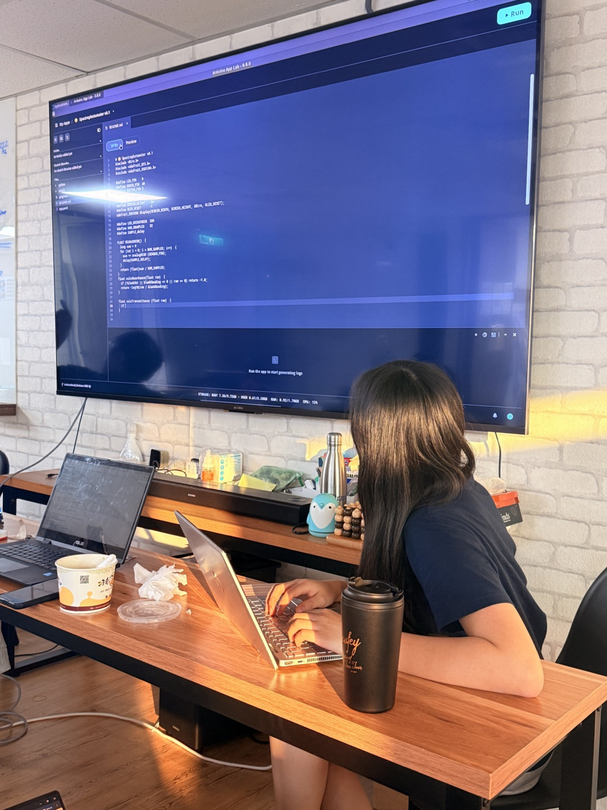
2026-05-28 放學後寫光度計的韌體。後面螢幕上那份檔案叫 Spectrophotometer v0.1，看得到讀吸光度的那幾行。28 May 2026 · writing the photometer firmware after school. The file on the screen behind is Spectrophotometer v0.1, and the absorbance lines are readable in it.
06
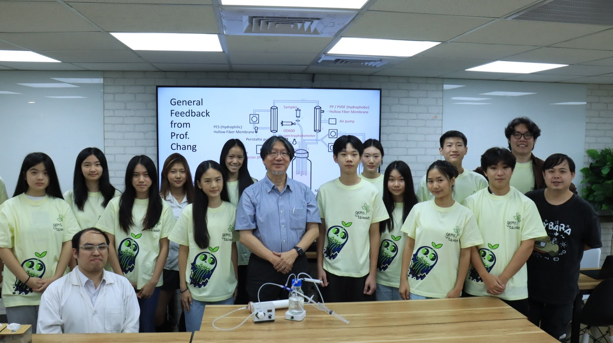
2026-06-18 張嘉修校長來 GEMS 把反應器從頭到尾看了一遍。幕上是他當天給的 General Feedback，桌上那台是當時的原型。同一個月 agar 換成直立盤，根長才開始有數字。18 June 2026 · Prof. Chang came to GEMS and went through the reactor end to end. The screen carries that day’s general feedback and the prototype itself is on the table. The same month the agar plates turned vertical and root length started producing numbers.
07
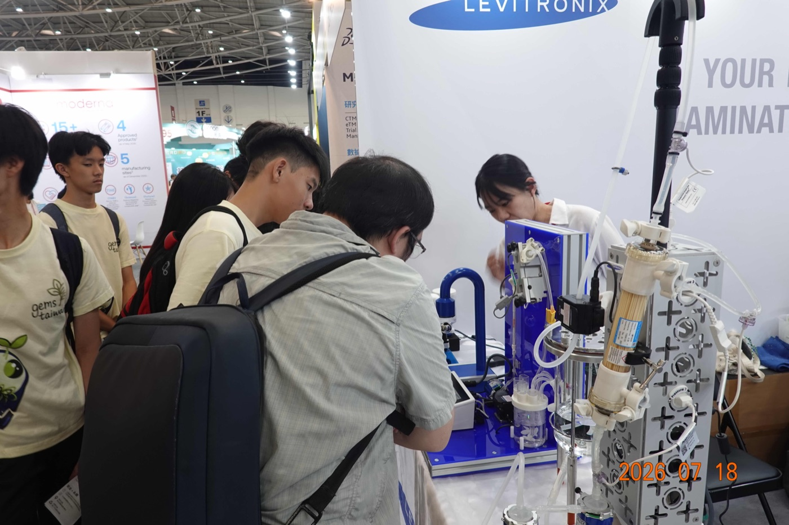
2026-07-18 BioAsia Taiwan，Levitronix 的攤位。右邊白色那根就是中空纖維膜模組，第一次看到工業規格的長什麼樣。18 July 2026 · BioAsia Taiwan, at the Levitronix booth. The white cartridge on the right is the hollow-fibre module: the first time we saw an industrial one.
08
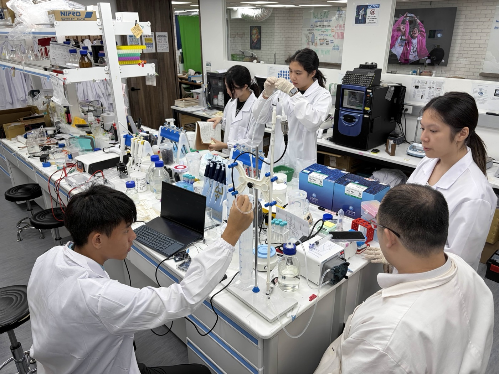
2026-08-13 一個週三下午。前面接的是壓力感測器和蠕動泵的管路，後面在打 PCR，同一個空間好幾件事一起跑。13 August 2026 · one Wednesday afternoon. In front, the pressure sensor plumbed to the peristaltic pump; behind, a PCR going. Several things at once in one room.
全隊GEMS Taiwan 2026，四十幾個人。植物、硬體、乾實驗、教育推廣分在不同組，這一頁上的數字是其中兩組做的。GEMS Taiwan 2026, more than forty people. Plants, hardware, dry lab and outreach sit in different subteams; the numbers on this page come from two of them.
The interactive calculation page for the reactor side. Not connected to the plant work; here so the other half of the project is visible.
引用References
Hontzeas, N., Zoidakis, J., Glick, B.R., & Abu-Omar, M.M. (2004). Expression and characterization of 1-aminocyclopropane-1-carboxylate deaminase from the rhizobacterium Pseudomonas putida UW4. Biochimica et Biophysica Acta 1703(1): 11–19. （KM、kcat、pH 最適值的來源）(source of KM, kcat and the pH optimum)
Glick, B.R. (2014). Bacteria with ACC deaminase can promote plant growth and help to feed the world. Microbiological Research 169(1): 30–39.
Wang, X. et al. (2022). BoPEP4, a C-terminally encoded plant elicitor peptide from broccoli, plays a role in salinity stress tolerance. International Journal of Molecular Sciences 23(6): 3123.
Tang, J. et al. (2015). Structural basis for recognition of an endogenous peptide by the plant receptor kinase PEPR1. Cell Research 25: 110–120.
Lichtenthaler, H.K. (1987). Chlorophylls and carotenoids: pigments of photosynthetic biomembranes. Methods in Enzymology 148: 350–382. （8.02／20.20 係數）(the 8.02 and 20.20 coefficients)
12整個專案，五步The whole project, in five steps
這一頁講的是植物那一塊。植物只是第一步，下面這張圖是整條線，從逆境一路到反應器和田。
每一格底下的照片都是那一步實際做的事。This page is about the plant end. That is only the first step. The line below is the whole thing,
from the stress through to the reactor and the field, and the photographs under each step are that step actually
being done.
讓每一位農民 都是生物製造者。Every farmer a biomanufacturer.
11 月 13 日我們去巴黎。iGEM Grand Jamboree，和全世界另外 151 隊一起比。
在那之前還有 10 月 21 日的 wiki freeze。這頁上還沒解決的每一件事，都要在那之前有個交代。
On 13 November we fly to Paris for the iGEM Grand Jamboree, alongside 151 other teams from
around the world, with the wiki freeze on 21 October before that. Everything still unsolved on this page has to
have an answer by then.